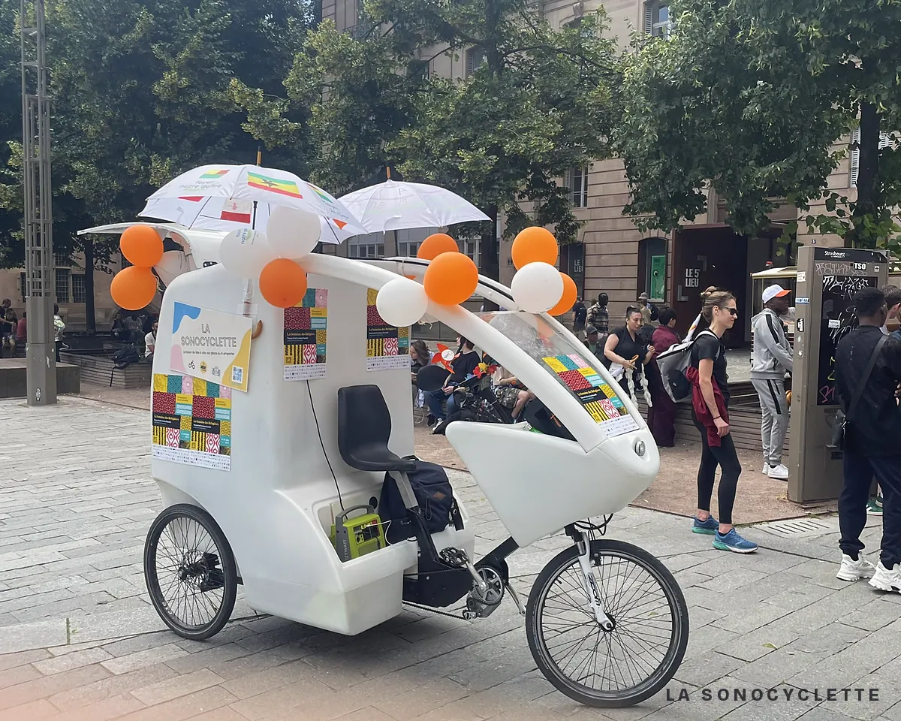
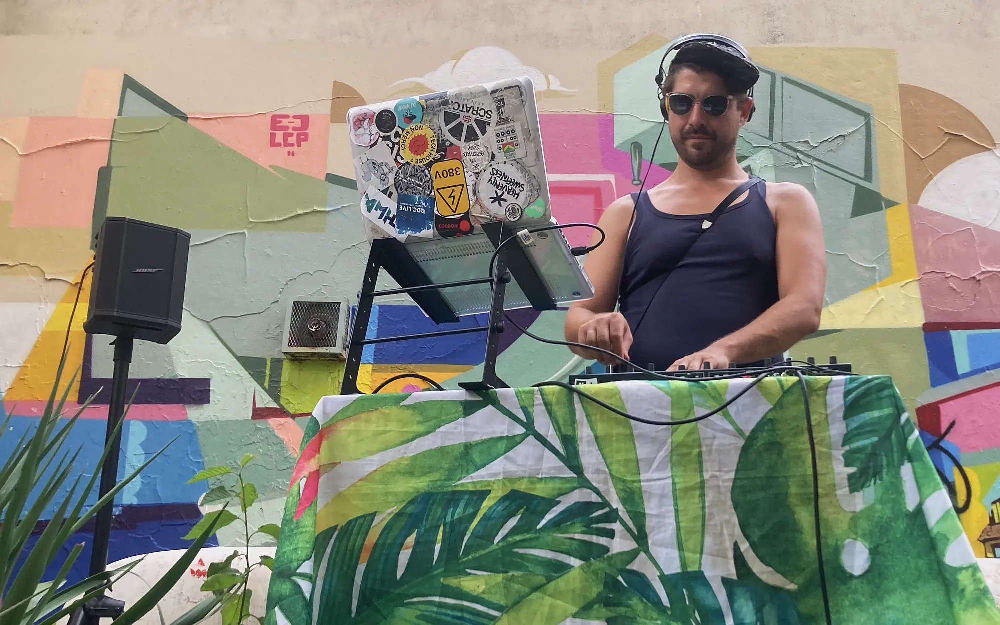
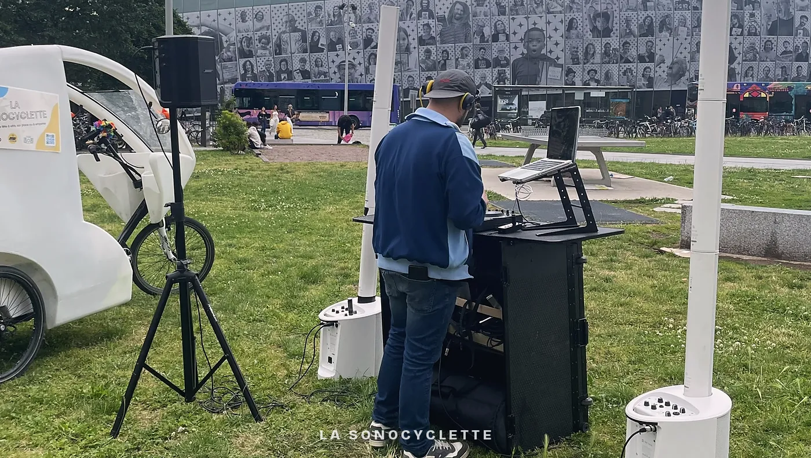
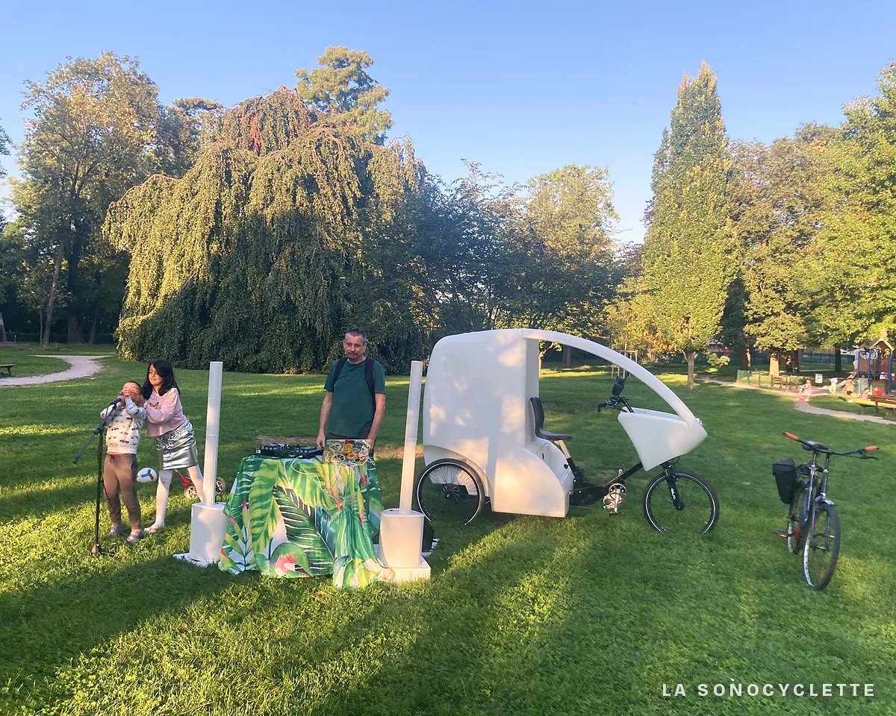
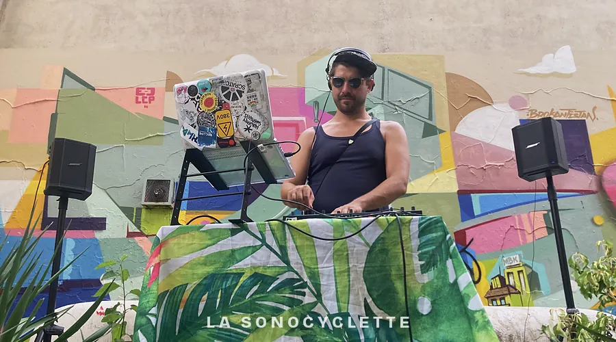
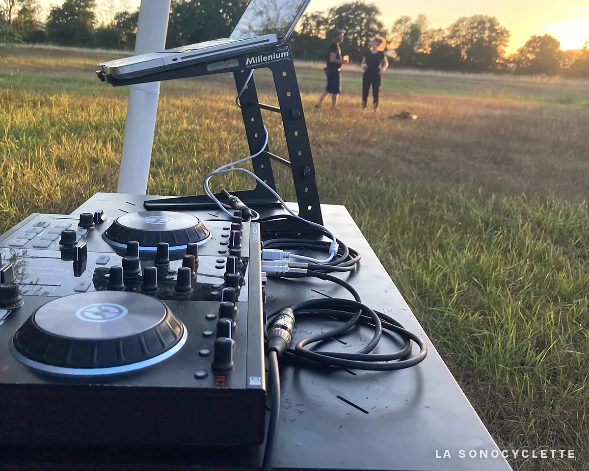
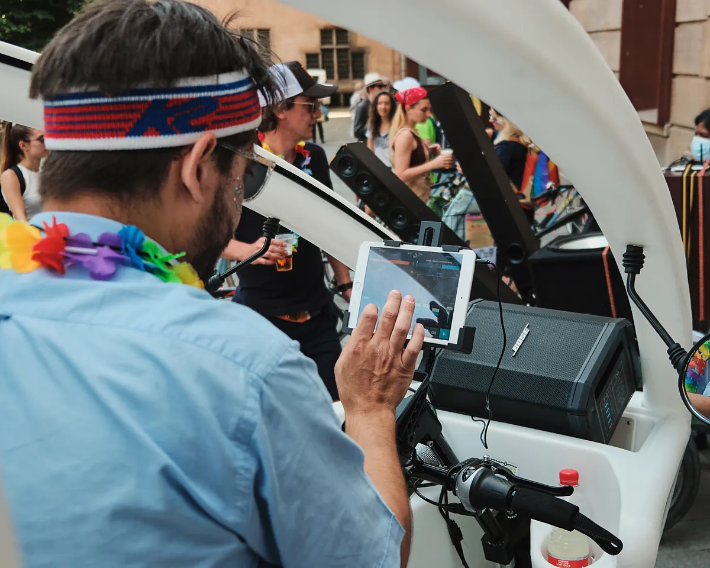
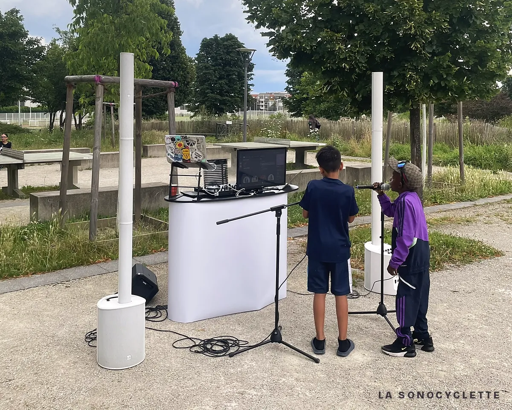

Anniversaires & boums
Jeune publicUne vraie boum avec un vrai DJ : jeux musicaux, dédicaces, blind test et machine à bulles.
- Répertoire adapté à l'âge des invités
- Volume maîtrisé, matériel sécurisé

Le DJ de La SonoCyclette. Des DJ sets pour tous les publics, de la boum d'anniversaire au bal de mariage, et des ateliers où les enfants prennent les commandes.
De l'apéro au bal, sons du monde et tubes pour tous les âges. DJ Super lit la piste et adapte le répertoire et le volume au public, en intérieur comme en plein air, avec la sono classique ou la SonoCyclette.

Une vraie boum avec un vrai DJ : jeux musicaux, dédicaces, blind test et machine à bulles.

Du vin d'honneur à la dernière danse, une playlist construite avec vous.

La fête arrive en bas de chez vous, au pied des immeubles ou sur la place du marché.

Ambiance musicale, annonces micro et déambulation à vélo pour les événements publics et d'entreprise.
Des ateliers de transmission où l'on apprend en faisant : on écoute, on manipule, on crée, puis on passe à l'antenne ou sur la piste devant le public.

Sélection, tempo, calage, puis un mini-set joué devant le public.

Conducteur, jingle, chronique, interview : on écrit, on enregistre, puis émission en direct et podcast.

Micros ouverts en pleine rue, des comptines aux tubes des parents.
Tarifs des ateliers : voir la page Tarifs. Parcours sur plusieurs séances (écoles, accueils de loisirs, centres socioculturels) : sur devis.
Avant les platines, il y a eu l'animation : direction d'accueils de loisirs et d'activités périscolaires, ateliers de musique assistée par ordinateur, ateliers radio dans les écoles et studio mobile. Depuis 2021, la SonoCyclette, régie à vélo à l'énergie solaire.
Technicien spécialisé en animation : chaque participant touche au matériel et repart avec quelque chose qu'il a créé.
Un artiste d'ici, qui travaille avec les centres socioculturels, les écoles et les associations de Strasbourg.
Batteries rechargées au soleil, déplacements à vélo : la fête sans bruit de moteur ni fumée.
Date, lieu, âge du public : on construit la proposition ensemble. Devis gratuit.